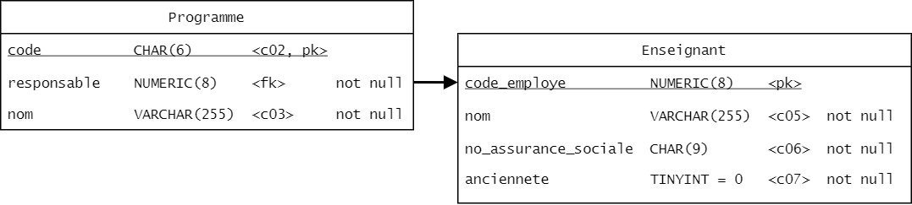
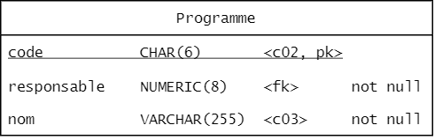

Base de données 1
Chapitre 4 - Assurer l'intégrité et la confidentialité des données
Base de données 1 420-2B4-VI Hiver 2022 Durée approximative : 6 heures — 3 périodes
Contenu
Contraintes d’intégrité
Clé primaire, clé étrangère et valeur par défaut Cascade Clé unique NULL CHECK Atelier
Contraintes d’intégrité
Une contrainte d’intégrité est une condition à vérifier sur un enregistrement afin de maintenir son intégrité (qu'elle contienne une valeur qui a un sens).
Généralement, une contrainte d’intégrité a pour effet de restreindre les valeurs possibles d’une colonne.
Clé primaire, clé étrangère et valeur par défaut
Les contraintes clé primaire, clé étrangère et valeur par défaut ont déjà été couvertes.
On a pu voir que certaines sont spécifiées directement dans la déclaration d’une colonne (DEFAULT, PRIMARY KEY), tandis que d’autres sont spécifiés sur leur ligne à part (FOREIGN KEY, PRIMARY KEY).
Ajouter un enregistrement ne respectant pas la contrainte, déclenche une erreur.
Rappel des contraintes
Clé primaire : PRIMARY KEY Force la valeur à être unique et est utilisé pour trouver rapidement un enregistrement. Permet l’utilisation par une clé étrangère. Une seule clé primaire permise par table.
Clé étrangère : FOREIGN KEY Référence un enregistrement d’une autre table. Garanti que l’enregistrement existe.
Rappel des contraintes
Valeur par défaut : DEFAULT Spécifie la valeur utilisée lorsqu’un enregistrement est créé et qu’aucune valeur n’est spécifiée. Si aucune valeur par défaut n’est indiquée, NULL est utilisée.
Cascade
Jusqu’à présent le code suivant provoque une erreur.
DELETE FROM Enseignant
WHERE id_enseignant = 1;
Parce que la table Programme contient une clé étrangère vers Enseignant et elle pointerait sur rien si l'enseignant est supprimé.

Cascade
La stratégie cascade permet de supprimer tous les enregistrements sont référencés, donc qui pose problème.
Par exemple, ici tous les cours associés aux professeurs seraient également supprimés.
FOREIGN KEY (colonne) REFERENCES Nom_table(colonne) ON DELETE CASCADE
Exercice 4-1
À partir du diagramme Ecole.pdf, identifiez les enregistrements de quelles tables seraient supprimés si toutes les clés étrangères utilisent la stratégie Cascade et que l'on supprime une session.
Cascade
La mise à jour en cascade permet de modifier la valeur d’une clé primaire et de mettre à jour simultanément toutes les clés étrangères (conserver l’intégrité).
Utile seulement si la clé primaire n’est pas un identifiant autoincrémenté.
FOREIGN KEY (colonne) REFERENCES Nom_table(colonne) ON UPDATE CASCADE
Clé unique
Une clé unique est une façon de préciser qu’une valeur ou un groupe de valeur sont uniques dans la table.
La clé primaire est un type particulier de clé unique.
ATTENTION : contrairement à une clé primaire, une clé unique peut être nulle et plusieurs enregistrements peuvent être nuls.
Clé unique
Pour indiquer qu’une colonne est unique, on place le mot-clé unique après le nom de la colonne.
CREATE TABLE Programme (
code CHAR(6) PRIMARY KEY,
nom VARCHAR(255) UNIQUE,
responsable NUMERIC(4),
...
);

Clé unique
Pour indiquer une clé unique portant sur plusieurs colonnes, on utilise la syntaxe suivante.
CONSTRAINT nom UNIQUE (colonne1, colonne2...)
CREATE TABLE Session (
id_session INTEGER
PRIMARY KEY AUTO_INCREMENT,
semestre ENUM('Automne', 'Hiver'),
annee YEAR,
debut_session DATE,
fin_session DATE,
CONSTRAINT semestre_annee_unique
UNIQUE (semestre, annee));
Nullité
À l’exception des clés primaires, toutes les colonnes peuvent prendre la valeur nulle.
On peut empêcher la présence de valeur nulle dans une colonne en ajoutant NOT NULL après le type.
Nullité
CREATE TABLE Etudiant (
code NUMERIC(7) PRIMARY KEY,
nom VARCHAR(255) NOT NULL
...
);
Exercice 4-2
Modifiez le script de création de la base de données ecole pour inclure les contraintes suivantes :
A) Deux programmes ne peuvent pas porter le même nom B) Chaque programme doit toujours avoir un professeur responsable C) Un même numéro de groupe ne peut pas être affecté au même cours à la même session (il y a un seul groupe 1 de BD1 à la session H22) D) Si l'on supprime une Évaluation, on veut supprimer toutes les Evaluation_etudiant associées.
Check
La contrainte CHECK permet de vérifier que les valeurs suivent une certaine condition. On insère cette contrainte directement dans la définition de la table.
CREATE TABLE Nom_table (
colonne TYPE,
...
CONSTRAINT nom_contrainte CHECK (condition));
Check
CREATE TABLE Evaluation (
id_evaluation INTEGER
PRIMARY KEY AUTO_INCREMENT
...
ponderation NUMERIC(5,2),
...
CONSTRAINT note_0_a_100
CHECK (ponderation BETWEEN 0 AND 100));
Exercice 4-3
Insérez une vérification pour vous assurer que : A) La note obtenue à une évaluation est positive B) L'ancienneté d'un enseignant est entre 0 et 50 C) Les sigles des cours sont dans le format suivant (A est lettre majuscule, # est un entier) : ###-#A#-AA
Que peut contenir un CHECK
Certaines colonnes ne peuvent pas faire l’objet d’un CHECK dont:
- Colonne avec l’attribut AUTO_INCREMENT
- Colonne avec référence d’action (CASCADE).
Que peut contenir un CHECK
On ne peut pas non plus appeler les éléments suivants dans un CHECK :
- Fonction non native ou procédure stockée
- Variable
- Requête
- Fonction non déterministe comme NOW()
Que peut contenir un CHECK
Finalement, un CHECK peut contenir les éléments suivants :
- Opérateur arithmétique
- Opérateur de comparaison
- Fonction déterministe (count, avg, year, …)
- Comparaison / opération sur plusieurs colonnes d’une même table.
Tricher et éviter les CHECK
À l’occasion, on peut vouloir insérer une valeur qui ne respecte pas une condition en raison d’un élément spécial.
On peut utiliser alors les requêtes spéciales avec la clause IGNORE :
INSERT IGNORE INTO ...
UPDATE IGNORE ...
LOAD DATA INFILE 'nom' IGNORE INTO TABLE ...
Comme toute vérification, il faut une bonne raison pour l’éviter !
Exercice 4-4
Implémentez, lorsque possible, les vérifications suivantes. Expliquez pourquoi lorsque vous ne pouvez pas les implémenter.
A) Le nom des documents remis n'excède pas 64 caractères (fonction CHAR_LENGTH ?) B) La note d’un étudiant n’excède jamais la pondération de l'évaluation C) La durée d'une session n'excède pas 17 semaines D) Pour une évaluation, tous les étudiants reçoivent une note E) Tous les documents sont remis à la date du jour (si je le dépose le 15 mars, alors la valeur dans date_remise est le 15 mars)
Modifier les tables pour ajouter ou retirer des contraintes
On peut modifier les tables pour ajouter ou supprimer des contraintes
ALTER TABLE Nom_table
ADD CONSTRAINT nom TYPE_CONTRAINTE (contrainte)
ALTER TABLE Nom_table
DROP [PRIMARY KEY | FOREIGN KEY | CHECK] nom
Ajouter une contrainte
Ajouter une clé primaire
ALTER TABLE Evaluation
ADD CONSTRAINT evaluation_pk PRIMARY KEY (id_evaluation);
Ajouter un CHECK
ALTER TABLE Evaluation_etudiant
ADD CONSTRAINT note_0_a_100 CHECK (note BETWEEN 0 AND 100);
Supprimer une contrainte
Supprimer une clé primaire
ALTER TABLE Evaluation
DROP PRIMARY KEY;
Supprimer un CHECK
ALTER TABLE Evaluation_etudiant
DROP CHECK note_0_a_100;
Cryptage
Techniques de cryptage et hashage Cryptage à clé symétrique Cryptage de la BD
Cryptage et hashage
Quelle est la distinction entre le cryptage et le hashage ?
Cryptage : transformation des données à l’aide d’une donnée secrète appelée clé
Hashage : transformation non inversible à l’aide d’un algorithme
Doc : https://dev.mysql.com/doc/refman/8.0/en/encryption-functions.html
Hashage
Une fonction de hashage accepte généralement une seule chaîne en entrée et retourne une valeur correspondant à l’entrée (appelé hash).
La fonction peut produire un hash unique pour chaque entrée (fonction injective) ou permettre à plusieurs entrées de partager le même hash. Le deuxième cas est celui le plus rencontré.
Il faut évidemment évaluer le risque de collision de hash (partage de valeur). Pour le hash de Git, ce risque est estimé à environ $1 \times 10^{-48}$, soit de tirer au hasard un atome sur la Terre.
Hashage
Les fonctions utilisables par MySQL (et d'autres langages) sont
| Fonction | Longueur du hash | Type de colonne |
|---|---|---|
| MD5 | 128 bits | CHAR(32) |
| SHA | 160 bits | CHAR(40) |
| SHA2 | variable | CHAR(56) à CHAR(128) |
Elles retournent toutes un hash en hexadécimal. On peut le convertir en binaire en utilisant la fonction UNHEX().
SHA2
La fonction SHA2 permet d’utiliser divers algorithmes. Les algorithmes sont SHA-224, SHA-256, SHA-384 et SHA-512.
L’algorithme retourne un nombre de bits égal au nombre après le SHA (par exemple SHA-256 retourne un nombre binaire de 256 bits).
Le standard est d’utiliser au moins 256 bits. On voit souvent 256 et 512 être utilisés.
Hasher avec SHA2
L’utilisateur veut enregistrer un mot de passe 'tarte123'. Pour le hasher avec SHA-256 avant de l’intégrer à la BD on utilise :
INSERT INTO Utilisateur (nom, mot_de_passe)
VALUES ('Patissier21', SHA2('tarte123', 256));
Résultat de SHA2
La requête
SELECT * FROM Utilisateur;
retourne
| nom | mot_de_passe |
------------------------------------------------------------------------------------
| patissier21 | b2c4b81704855df00cff57312d46ec28254e2f69f526cc61da5f2df20c43d075 |
| jardiner14 | b48cea174391677879618ace9ea78531f5a0d18551de187ee76eb3190624ef35 |
...
Pour et contre du hashage ?
Avantages : * Plus rapide qu’un cryptage * Espace mémoire constant * Impossible à inverser
Désavantage : * Impossible d’avoir accès à la donnée originale
Quand utiliser le hashage
- Pour les données que nous n’avons pas besoin de consulter
- Vérification d’intégrité de fichier ou de transport (checksum)
Fonction de SHA256
https://qvault.io/cryptography/how-sha-2-works-step-by-step-sha-256/#:~:text=SHA%2D2%20is%20an%20algorithm,is%20the%20output%20size%2C%20256.
- Convertir en binaire
- Ajouter un 1
- Allonger avec des 0 à la fin pour obtenir un multiple de 512 moins 64 bits
- Ajouter la longueur de l'entrée originale en binaire sur 64 bits.
Exemple
- Allo -> 01100001 01101100 01101100 01101111
- 01100001 01101100 01101100 01101111 1
- 01100001 01101100 01101100 01101111 1000000 00000000 00000000 00000000 00000000 00000000 00000000 00000000 00000000 00000000 00000000 00000000 00000000 00000000 00000000 00000000 00000000 00000000 00000000 00000000 00000000 00000000 00000000 00000000 00000000 00000000 00000000 00000000 00000000 00000000 00000000 00000000 00000000 00000000 00000000 00000000 00000000 00000000 00000000 00000000 00000000 00000000 00000000 00000000 00000000 00000000 00000000 00000000 00000000 00000000 00000000 00000000
- 01100001 01101100 01101100 01101111 1000000 00000000 00000000 00000000 00000000 00000000 00000000 00000000 00000000 00000000 00000000 00000000 00000000 00000000 00000000 00000000 00000000 00000000 00000000 00000000 00000000 00000000 00000000 00000000 00000000 00000000 00000000 00000000 00000000 00000000 00000000 00000000 00000000 00000000 00000000 00000000 00000000 00000000 00000000 00000000 00000000 00000000 00000000 00000000 00000000 00000000 00000000 00000000 00000000 00000000 00000000 00000000 00000000 00000000 00000000 00000000 00000000 00000000 00000000 00000100
- Initialisation des 8 constantes de hash qui sont la représentation binaire des 32 premiers bits de la partie fractionnaire des racines des 8 premiers nombres premiers (2, 3, 5, 7, 11, 13, 17, 19)
Exemple
Racine de 2 = 1.41421356237 Partie fractionnaire = 41421356237 En binaire = 1101010000010011110011001100111
-
Initialisation des 64 constantes d'arrondissement qui sont la représentation binaire des 32 premiers bits de la partie fractionnaire des racines cubiques des 64 premiers nombres premiers (2, 3, 5, 7, 11, 13, 17, 19 - 311)
-
Création de chunk (segment) de 512 bits de long
- Création du message pour chaque chunk
- Compression du message en utilisant les constantes établies et concaténation du résultat.
Cryptage
Une fonction de cryptage transforme une chaîne avec les données d’une chaîne secrète appelée « clé ».
Texte clair + clé 🡺 texte crypté Texte crypté + clé 🡺 texte clair
On appelle cryptage à clé symétrique lorsque la clé servant à crypter et à décrypter est la même.
Voir Illustration - Hashage et cryptage
Sécurité du cryptage symétrique
La sécurité d’un cryptage à clé symétrique repose sur 2 facteurs :
- Le secret de la clé
- La longueur de la clé
Algorithme AES
Le Advance Encryption Standard (AES) est la méthode de cryptage symétrique la plus utilisée aujourd’hui.
Les données sont cryptées par bloc de 128 bits. La clé peut faire 128, 192 ou 256 bits.
Il effectue plusieurs étapes de permutation / substitution
Crypter avec MySQL
Pour crypter, on utilise la fonction AES_ENCRYPT. Son premier argument est le texte à crypter et le second la clé secrète. La clé doit avoir entre 128 et 256 bits.
INSERT INTO Utilisateur (nom, carte_credit)
VALUES ('Patissier21', AES_ENCRYPT('1234123412341234',
UNHEX('F3229A0B371ED2D9441B830D21A390C3')));
On place le résultat dans un BLOB.
Fonction UNHEX
La fonction UNHEX convertit une chaîne de valeurs hexadécimale en sa représentation sous forme de chaîne de caractères.
| Mot | HEX(mot) | CAST(UNHEX(hex) AS CHAR) |
|---|---|---|
| A | 41 | A |
| Allo | 416C6C6F | Allo |
Décrypter avec MySQL
Pour décrypter, on utilise la fonction AES_DECRYPT. Le premier argument est la valeur à décrypter, le second la clé secrète.
SELECT nom, CAST(AES_DECRYPT(carte_credit,
UNHEX('F3229A0B371ED2D9441B830D21A390C3’)) AS CHAR)
AS carte_credit FROM Utilisateur;
Le résultat du décryptage.
| nom | carte_credit |
------------------------------------
| patissier21 | 1234123412341234 |
| jardiner14 | 9876987698769876 |
Si la mauvaise clé est passée, alors la valeur NULL est retounée (et non le résultat du décryptage avec la mauvaise clé !)
Phrase secrète
Plutôt que d’utiliser une clé binaire, on peut utiliser une phrase secrète comme mot de passe. La clé est cependant limitée à 256 caractères. Comment fait-on ?
- On peut hasher la phrase secrète pour obtenir une chaîne de la bonne longueur !
Phrase secrète
# Insertion
INSERT INTO Utilisateur (nom, carte_credit)
VALUES ('Patissier21', AES_ENCRYPT('1234123412341234',
UNHEX(SHA2('secret', 256))));
# Lecture
SELECT nom,
CAST(AES_DECRYPT(carte_credit, UNHEX(SHA2('secret', 256))) AS CHAR) AS 'Carte credit'
FROM Utilisateur;
Cryptage de la BD
L’engin de stockage de données InnoDB permet de crypter l’ensemble d’une table ou de la BD. Via un plug-in.
Ces manipulations ne sont pas vues en classe.
https://dev.mysql.com/doc/refman/8.0/en/innodb-data-encryption.html
Exercice 4-5
On crée la table de renseignements personnels suivant : 1. Nom 2. Mot de passe 3. Le contenu du certificat de naissance 4. Une chaîne authentifiant le contenu du certificat de naissance 5. Numéro de compte en banque 6. Date de naissance
Ajoutez les informations d’une personne fictive en cryptant ou hashant les données selon la situation.
Affichez ensuite ces informations
Gestion des accès
CRUD des utilisateurs Conférer et révoquer des privilèges Créer des rôles
Pourquoi gérer les rôles
On développe un site web avec les contraintes de sécurité suivantes.
- Les programmeurs peuvent modifier des tables, des déclencheurs et des enregistrements.
- L’administrateur de la BD peut ajouter des utilisateurs et accomplir toutes les opérations des développeurs
- Les visiteurs peuvent uniquement ajouter, modifier, supprimer ou lire des enregistrements.
De cette façon, si un mot de passe utilisé dans le site web est volé, l’accès à la BD est limité.
CRUD des utilisateurs
Pour ajouter un nouvel utilisateur, on utilise la syntaxe suivante:
CREATE USER nom IDENTIFIED BY mot_de_passe;
Exemple:
CREATE USER visiteur IDENTIFIED BY '12345’;
Il existe toujours un utilisateur de base : root@localhost
Modifier un utilisateur
Pour changer un mot de passe, la requête est:
ALTER USER nom IDENTIFIED BY nouveau_mot_de_passe;
Exemple:
ALTER USER visiteur IDENTIFIED BY '54321';
Modifier un utilisateur
Pour renommer un utilisateur, la requête est :
RENAME USER ancien_nom TO nouveau_nom;
Exemple :
RENAME USER visiteur TO visiteurs;
Supprimer un utilisateur
Pour retirer un utilisateur, on utilise la requête:
DROP USER nom;
Exemple :
DROP USER visiteurs;
Niveaux de privilège
Les niveaux de privilèges accordent certains droits d’accès pour modifier des parties de la BD. Les niveaux (non exhaustif) sont
| ALL (tout) | DELETE | REFERENCES (crée des clés étrangères) |
| ALTER | DROP | SELECT |
| CREATE | DROP ROLE | SHOW DATABASES |
| CREATE ROLE | EXECUTE (routines) | TRIGGER |
| CREATE ROUTINE | FILE | UPDATE |
| CREATE USER | INSERT | USAGE |
Conférer un privilège
Pour assigner un privilège à un rôle, on utilise une requête GRANT.
GRANT priviliege1, privilege2 ON [* | table] TO nom_utilisateur;
Conférer un privilège
On ajoute le privilège de lecture sur toutes les tables de la base de données ecole aux visiteurs.
USE Ecole;
GRANT SELECT ON * TO 'visiteurs’;
Pour ajouter le privilège d’écriture et de modification sur la table Etudiant
GRANT INSERT, UPDATE ON Etudiant TO 'visiteurs';
Révoquer un privilège
La requête de retrait de privilège est REVOKE.
REVOKE priviliege1, privilege2 ON [* | table]
FROM nom_utilisateur;
Par exemple, on révoque le privilège d’ajout des visiteurs sur la table Etudiant.
REVOKE UPDATE ON Etudiant FROM ‘visiteurs’;
Déterminer l'utilisateur connecté
La fonction USER() retourne l’utilisateur actuellement connecté à la base de données.
Exemple:
SELECT USER();
| USER() |
|----------------|
| root@localhost |
Exercice 4 – 7
Créez un nouvel utilisateur qui possède tous les privilèges.
Déconnectez-vous en fermant Workbench et reconnectez-vous avec le nouvel utilisateur.
Les rôles
Que faire si on a 8 programmeurs qui ont chacun leur accès distinct (nom et mot de passe), mais qui doivent tous avoir le même niveau de privilège.
Imaginez qu’on ajoute une table. Doit-on modifier les accès de tous les utilisateurs ?
Ça serait plus simple d’avoir une structure contenant les privilèges.
Les rôles
Un rôle est une liste d’accès. Plutôt que de définir les accès par utilisateur, on peut leur assigner un rôle.
Donc tous les utilisateurs avec les mêmes privilèges d’accès auront le même rôle.
Cela facilite grandement le changement de privilèges.
Définir un rôle
On utilise CREATE ROLE pour créer un nouveau rôle et DROP ROLE pour le supprimer.
Il n'y a pas de requête pour changer le nom d'un rôle.
CREATE ROLE nom_role;
DROP ROLE nom_role;
Conférer ou révoquer un privilège à un rôle
On remplace le nom d’utilisateur dans la requête GRANT ou REVOKE par le nom du rôle.
GRANT privilege ON [*| Nom table] TO nom_role;
REVOKE privilege ON [* | Nom table] FROM nom_role;
Par exemple, on permet au programmeur de créer des tables et des clés étrangères.
GRANT CREATE TABLE, REFERENCES ON * TO programmeur;
Assigner un rôle à un utilisateur
On peut affecter un rôle directement à la création
CREATE USER nom IDENTIFIED BY mot de passe
DEFAULT ROLE role1, role2...;
Exemple:
CREATE USER alice IDENTIFIED BY 'chat'
DEFAULT ROLE programmeur ;
Modifier le rôle affecté un utilisateur
On peut modifier les rôles avec
GRANT role1, role2 ... TO utilisateur1, utilisateur2...
REVOKE role FROM utilisateur;
Autres fonctions utiles pour la gestion des rôles
Afficher l'utilisateur connecté
USER()
Afficher tous les rôles de l’utilisateur connecté
CURRENT_ROLE()
Afficher les privilèges
SHOW GRANTS FOR role | utilisateur
Exercice 4-8
Créer un rôle enseignant qui peut modifier les tables Évaluation et Évaluation_etudiant ainsi qu’un rôle responsable qui peut changer la table Cours, Inscription, Groupe, Session et Etudiant.
Ajouter un utilisateur appelé Scott Summers qui est enseignant et Jean Grey qui est enseignante et responsable.